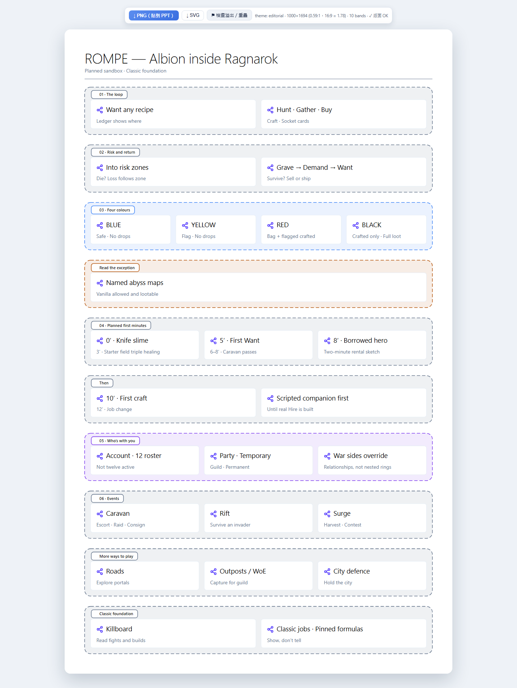
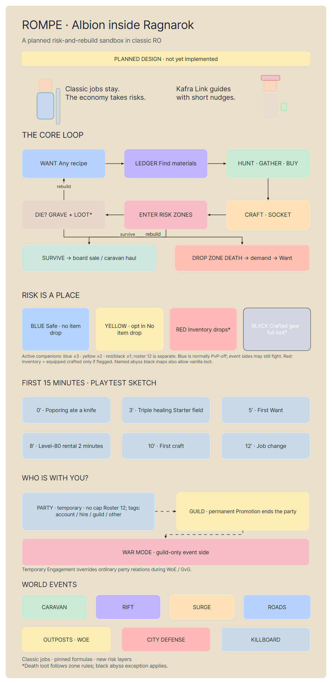

Represent · Hands-on tool study · 21 October 2026
ROMPE.
Explore the design.
An Albion-inspired economy, risk and social world inside retro Ragnarok. These explain an accepted design, mostly still planned. They are not a demonstration of shipped gameplay.
Start with the poster for the big picture, then use the explainer's ten views to inspect risk, your first minutes, groups and events. Click a diagram card for details and its source. The interactive overview works best on a desktop screen.
A memorable overview
 Illustrated poster · Built-in image generation, followed by a factual correction pass. Fixed image, not interactive.
Illustrated poster · Built-in image generation, followed by a factual correction pass. Fixed image, not interactive.
Compare the poster approaches

interactive-diagram poster: consistent and exportable, but repetitive and less expressive.
Eraser poster: controlled content, with a flat visual style and some dense labels.What the brief needed clarified
Loot loss depends on the zone. Red includes a conditional equipped-crafted-gear loss. Black has an abyss exception. Twelve is roster capacity, not twelve active companions. The first fifteen minutes are a playtest sketch; the borrowed hero may initially be scripted.
Some source details remain unresolved, including the meaning of “flagged” in the red-loss rule and competing war-relation rules. The explainer keeps those uncertainties visible.
Source audit · Source versions and facts · Browser test evidence · Plain-language pitch